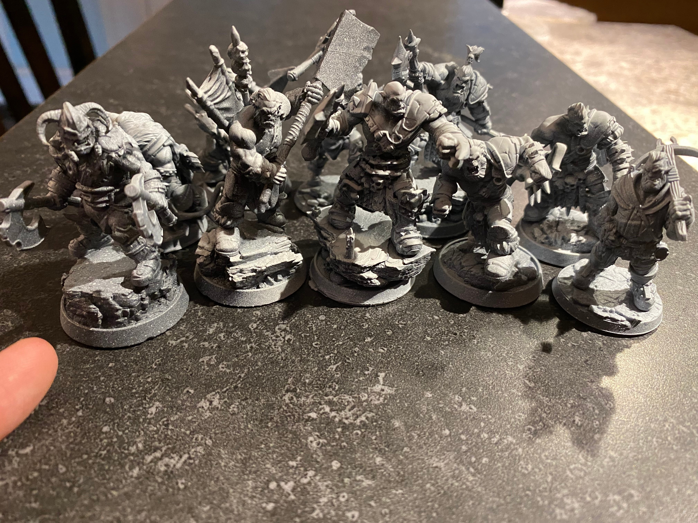

The World of Warcraft community is known for its creativity. Fans create artwork, cosplay, videos, and guides inspired by the game.
Artists recreate famous characters and epic scenes from the game.
Fans design detailed armor and costumes based on classes like Paladin, Warrior, and Mage.
Players create films and tutorials using in-game footage.